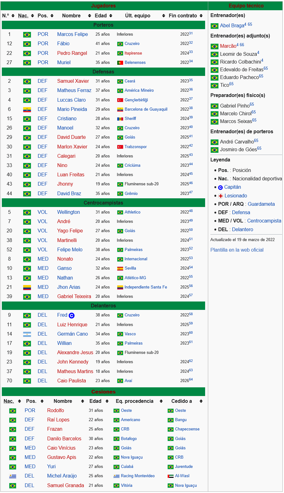

- Grupo A
- Grupo B
- Grupo C
- Grupo D
Fluminense Football Club El Fluminense Football Club (conocido simplemente como Fluminense) es un club polideportivo brasileño con sede en la ciudad de Río de Janeiro. Fue fundado el 21 de julio de 1902 por Oscar Cox, un brasileño de origen británico. El acto fundacional se llevó a cabo en el caserón residencial de Horácio da Costa Santos, ubicado en la calle Rua Marquês de Abrantes, número 51. Su nombre proviene del Latín Flūmen, cuyo significado es Río. n. 1 Establecido en el entonces barrio aristocrático de Las Laranjeiras, Fluminense fue forjado por los hijos de la elite carioca que había entrado en contacto con el fútbol durante sus estudios en Europa. En efecto, Oscar Cox introdujo el fútbol en Río de Janeiro después de concluir sus estudios en el Colegio de La Ville, en Lausana, Suiza, donde jugó y aprendió a disfrutar del fútbol.8 Su primer partido oficial se jugó contra el ahora extinto Río FC y terminó 8-0 para Fluminense.9 El primer logro futbolístico fue en 1906, cuando ganó su primer Campeonato Carioca, un campeonato regional de Brasil. Fluminense disputa el Campeonato Brasileño de Serie A, donde obtuvo cuatro títulos: 1970, 1984, 2010 y 2012. También fue campeón de la Copa de Brasil de 2007 y de la Primera Liga de Brasil de 2016. Es el segundo equipo con mayor cantidad de títulos en el Campeonato Carioca, con 31 veces, y a su vez, fue el máximo campeón de dicha competencia desde su creación en 1906 hasta el año 2009, completando así una supremacía histórica en dicha competencia con 103 años como máximo campeón. También salió campeón en dos oportunidades del Torneo Río-São Paulo en 1957 y en 1960, la primera de manera invicta. A nivel internacional obtuvo la Copa Internacional de Río en 1952 un antiguo campeonato intercontinental organizado por la CBD.1011 Su mejor resultado en la Copa Libertadores de América fue un subcampeonato en el año 2008. Por su parte, su mejor resultado en la Copa Sudamericana fue también un subcampeonato en 2009, perdiendo ambas finales en el mismo estadio Maracaná contra el mismo equipo, la Liga de Quito. Fluminense forma parte de los 4 grandes de Río de Janeiro, junto a Flamengo, Botafogo y Vasco da Gama, quienes son sus archi-rivales. Está considerado por los medios brasileños como uno de los clubes del selecto grupo denominado "Los Doce Grandes". La camiseta del Fluminense, es granate, verde y blanca a rayas verticales; por ello es apodado como Tricolor. Sin embargo, la primera camiseta que usarían en 1902 sería a dos colores: blanco y gris en partes iguales. Originalmente jugaba en su estadio Estádio das Laranjeiras en el barrio homónimo, donde se fundó. Actualmente disputa sus partidos más importantes en el Estadio Maracaná.
